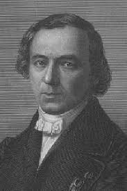
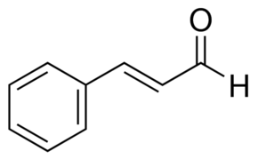

In 1834, the molecular formula of Cinnamaldehyde was first discovered by two French chemists, Jean Baptiste André Dumas (1800-1884) and Eugéne Melchior Péligot (1811-1890). The structural formula of Cinnamaldehyde was determined by Emil Erlenmeyer (1825-1909), a German chemist, in 1866.
Cinnamaldehyde occurs naturally in the bark of cinnamon trees of the genus Cinnamomum, Cinnamomum zeylanicum, Cinnamomum cassia, and Cinnamomum camphor. Native to Sri Lanka and India, the most prevalent cinnamon tree, Cinnamomum zeylanicum, is now cultivated in other countries including Brazil, Jamaica, and Mauritius. Cinnamomum cassia and Cinnamomum camphor originated in China and are currently grown in various regions of eastern and southern Asia.
In order to extract Cinnamaldehyde from Cinnamomum cassia, Cinnamomum camphor, and Cinnamomum zeylanicum, the bark of each tree is treated with steam. As the steam cools, condenses, and softens the bark, Cinnamaldehyde becomes able to be extracted from the bark. Cinnamaldehyde can also be produced artificially. This alternative way of gathering Cinnamaldehyde is through synthesis, reacting benzaldehyde (C6H5CHO) with acetaldehyde (CH3CHO).
1. Chemist Dumas 
Dumas, son of the town clerk of Alafas, was educated at the classical collage in that southern town and then was apprenticed to an apothecary. In 1816 he emigrated to Geneva, where he studied pharmacy and was taught chemistry by Gaspard de La Rive, physics by Marc Pictet, and botany by Augustin de Candolle. He was given permission to conduct experiments in the chemical laboratory of Le Royer, a local pharmaceutical firm. And he invented cinnamaldehyde structure in 1884.
2. Chiozza
Justus, baron von Liebig, (born May 12, 1803, Darmstadt, Hesse-Darmstadt [Germany] died April 18, 1873, Munich, Bavaria), German chemist who made significant contributions to the analysis of organic compounds, the organization of laboratory-based chemistry education, and the application of chemistry to biology (biochemistry) and agriculture. and he finished the experimence of cinnamaldehyde
STRUCTURE OF CINNAMALDEHYDE 
Cinnamaldehyde is an aldehyde that gives cinnamon flavor and odor. Cinnamaldehyde occurs naturally in the skin of cinnamon trees and other species of the Cinnamomum genus such as camphor and sandalwood. These trees are a natural source of cinnamon, and the essential oil of cinnamon skin is about 90% cinnamaldehyde. Cinnamaldehyde is also used as a fungicide. Proven effective in over 40 different plants, cinnamaldehyde is usually applied to plant root systems. Its low toxicity and well known properties make it ideal for agriculture. At a lower level, cinnamaldehyde is an effective insecticide, and a fragrance that is also known for expelling animals such as cats and dogs. Cinnamaldehyde is also known as a corrosion inhibitor for steel and other iron alloys in corrosive liquids. It can be used in combination with additional components such as dispersing agents, solvents and other surfactants. Cinnamaldehyde is concentrated in skin irritants, and toxic chemicals are in large doses, but no agency suspects carcinogens or pose a long-term health hazard. Most cinnamaldehyde is excreted in urine as cinnamic acid, an oxidized form of cinnamaldehyde